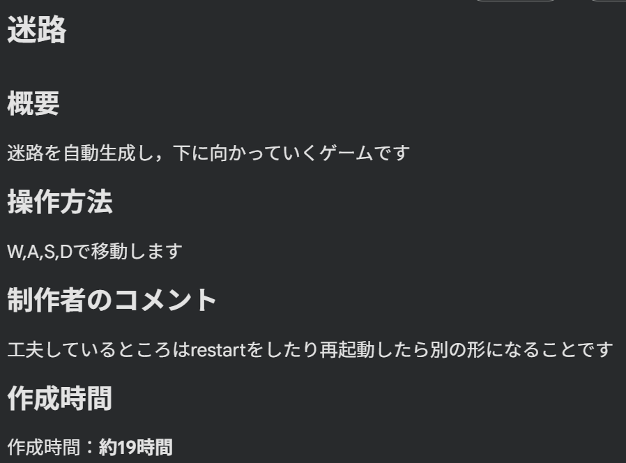
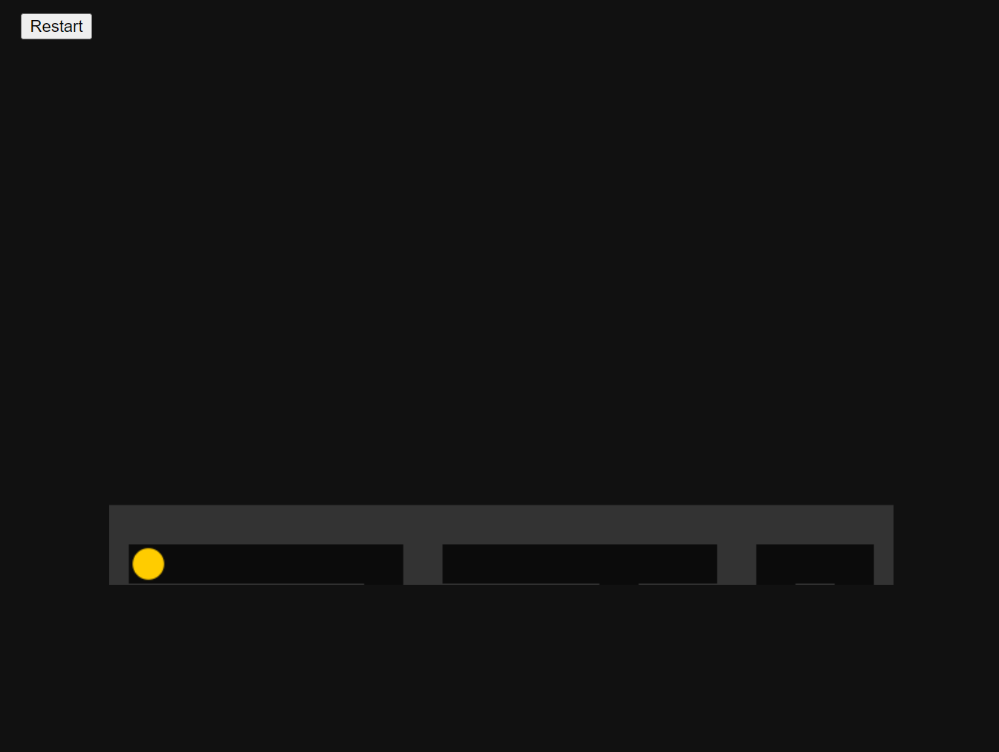
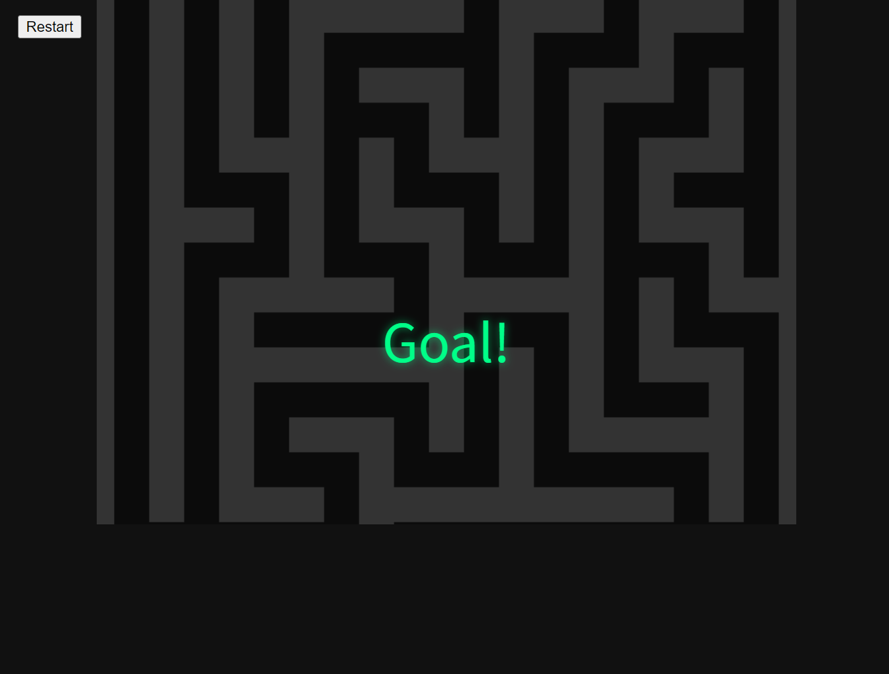
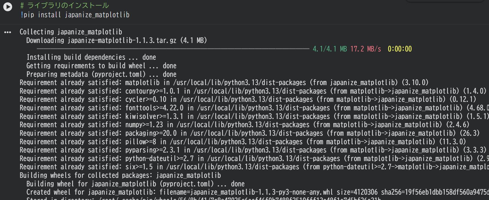

STUDENT PORTFOLIO / 2026
大阪公立大学工業高等専門学校
My Portfolio.
渡邉 凌 2年・知能情報コース
学習したこと、制作したもの、これから挑戦すること。
学校での活動と技術についてまとめています。
01 / PROFILE
About Me
渡邉 凌
大阪公立大学工業高等専門学校 / 2年 知能情報コース
学校の授業や課題を通して、プログラミングや情報技術について学んでいます。Pythonを使ったプログラム制作のほか、ArduinoやScratchなどにも取り組んでいます。このページでは、課題やプロジェクトで取り組んだ内容、使用した技術を紹介します。
- 学校
- 大阪公立大学工業高等専門学校
- 学年・コース
- 2年・知能情報コース
- 氏名
- 渡邉 凌
02 / ASSIGNMENT 04
Python Program
課題04（自由課題）で作成したPythonプログラム
Python自由課題プログラム
Google Colabで作成したPythonプログラムです。具体的なタイトルや処理内容、工夫した点は、実際の課題内容に合わせて下記を編集してください。
OVERVIEW / 概要説明ここに「何をするプログラムか」「どのような処理を行うか」「工夫した点・学んだこと」を具体的に記入してください。
Google Colabでプログラムを開く ↗プログラムのスクリーンショット
授業中にgooglecolabで作ったコードです。




03 / KO-SEN FESTIVAL
Project Activity
今年度の高専祭展示に向けたプロジェクト活動
高専祭展示プロジェクト
班名 2MTW
制作物 モウワスレナーイ
活動の目的 選択科目での課題のため
MY ROLE / 考案・副班長自分が担当した作業 考案,一部プログラムの作成、班内での役割 副班長、工夫したこと、活動を通して学んだこと アプリケーション作成
04 / EXPERIENCE
Skills & Tools
授業・演習などで触れたプログラミング言語とソフトウェア
Programming Languages
Software / Web Services
※ 実際に授業や課題で使用した範囲に合わせて調整してください。使用経験と習熟度を混同せず、できることを具体的に記載しています。